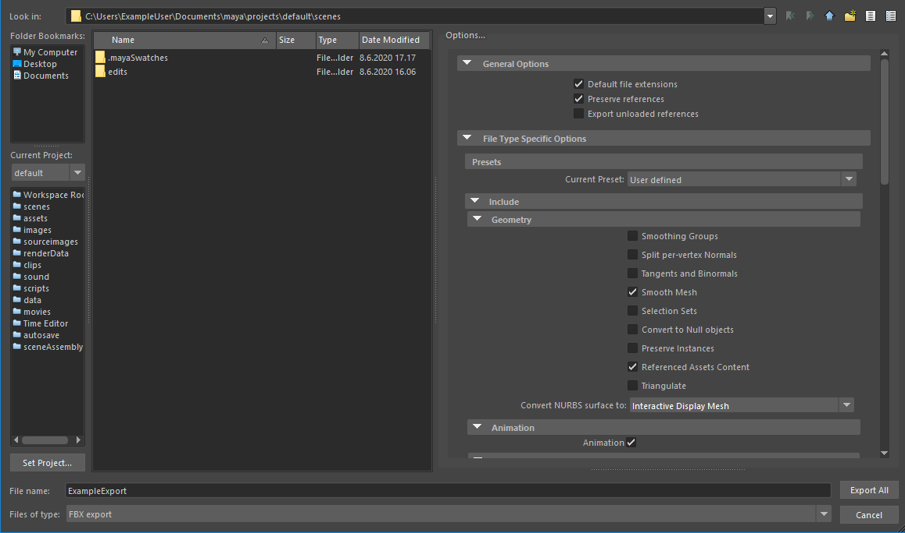
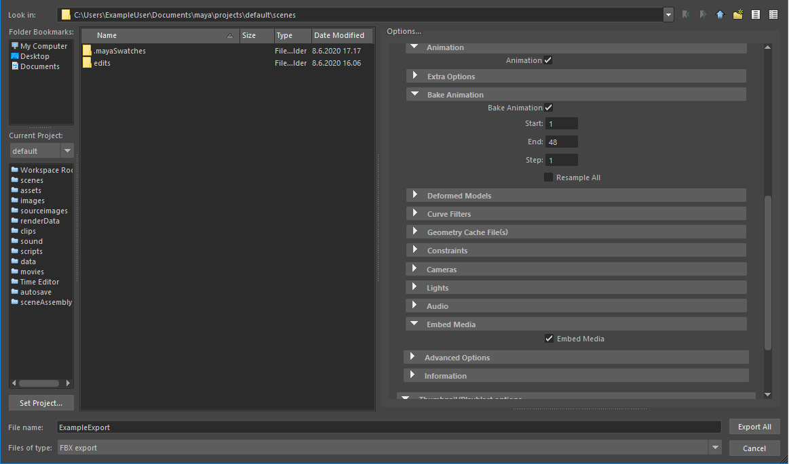

Exporting from Maya
You can export graphics from Maya in the FBX format. The necessary plugin is usually enabled by default, but you can check that in the plugin manager.
Maya exports the transformation as given by the scene. To include frozen transformations in your export, select Modify > Freeze Transformation in Maya before exporting your assets. For more information, see Maya documentation.
We recommend using default pivot points in your designs to avoid problems when importing to Qt Design Studio. If you want to use a non-default position for a pivot point, you have to adjust it in Maya before exporting your assets.
To export certain elements of your design, such as geometry, animations, and textures, you need to adjust the settings for FBX exports under File Type Specific Options in Maya export options. The optional steps should only be applied if required by the project. For example, including embedded media in your export simplifies moving the scene to another computer but increases the file size as well as the loading time of the scene since the textures need to be extracted before they can be imported to the scene. This would result in the same texture existing in three locations on your computer: the original location, embedded in the scene, and extracted into the asset import folder.
These instructions apply to Autodesk Maya 2020.
To export graphics from Maya:
- Select Window > Settings/Preferences > Plug-in Manager and check that the fbxmaya.mll plugin is enabled.
- Select File > Export All.

- In the File name field, enter a name for the export file.
- In the Files of type field, select FBX export.
- Select File Type Specific Options > Presets > Current Preset > Autodesk Media & Entertainment to select suitable default settings for importing to Qt Design Studio. These settings will be adjusted in the following steps, which will cause the Current Preset to change to User defined.
- Select Include > Geometry > Convert NURBS surface to > Interactive Display Mesh to convert NURBS surfaces to polygons based on the NURBS display settings.
- Optionally, select Animation > Baked Animation, and then select Bake Animation check box to include baked animations in your export. Enter the start and end frames to bake into your animation.

- Optionally, select Embed Media, and then select the Embed Media check box to include embedded textures. The embedded media will be copied to a
fileName.fbmfolder in the same location as the FBX file. - Select Export All to export files.
For more information, watch the following video: